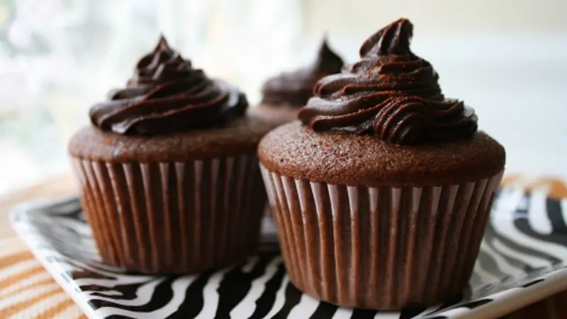

Resep Cupcake

Cupcake adalah kue mungil yang lembut dan manis, biasanya dihias dengan frosting beraneka warna.
Bahan-bahan:
- 200 gram tepung terigu
- 100 gram gula pasir
- 2 butir telur
- 100 ml susu cair
- 100 gram mentega, lelehkan
- 1 sdt baking powder
- 1 sdt ekstrak vanila
Cara Membuat:
- Panaskan oven hingga 180°C, siapkan cetakan cupcake dengan kertas cup.
- Kocok telur dan gula hingga mengembang.
- Masukkan tepung terigu, baking powder, dan susu cair, aduk hingga rata.
- Tambahkan mentega leleh dan vanila, aduk perlahan.
- Tuang adonan ke cetakan hingga 3/4 penuh, panggang selama 20-25 menit.
- Dinginkan dan hias dengan frosting sesuai selera.